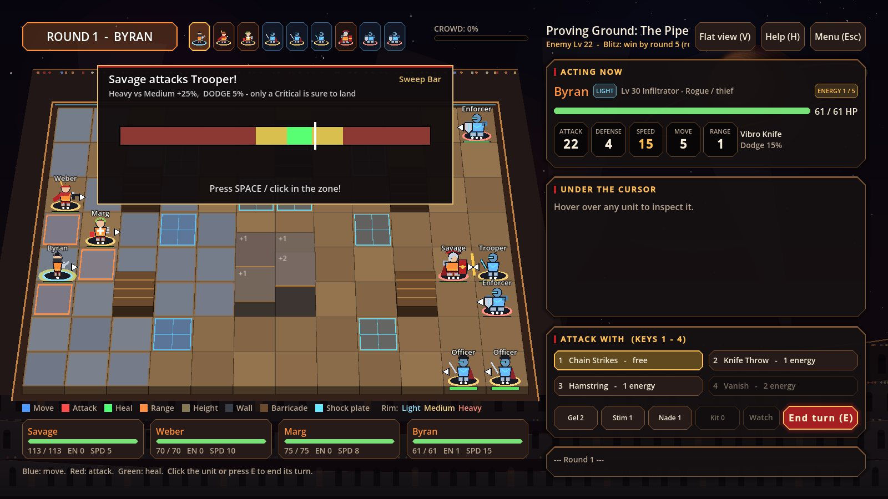
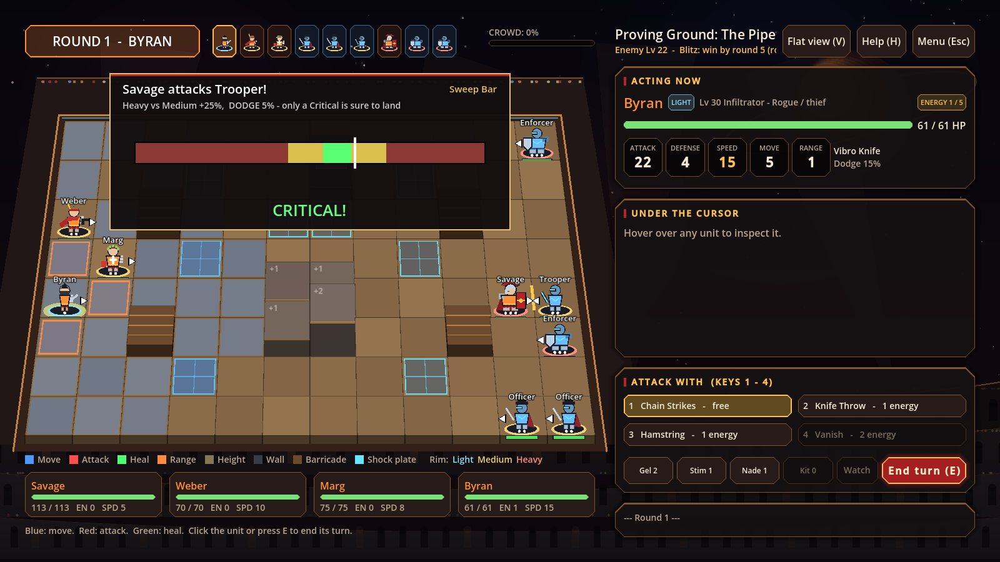
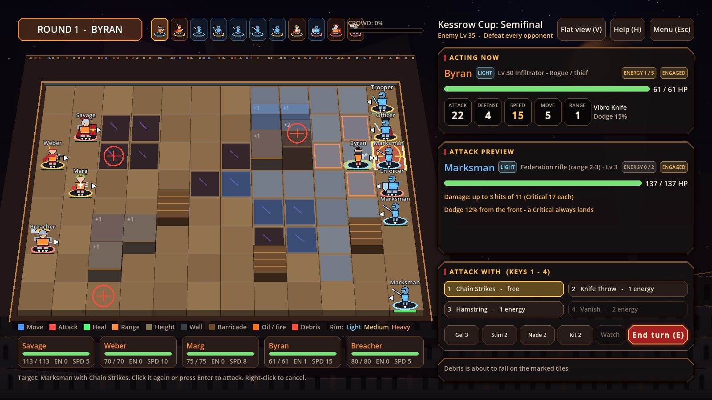
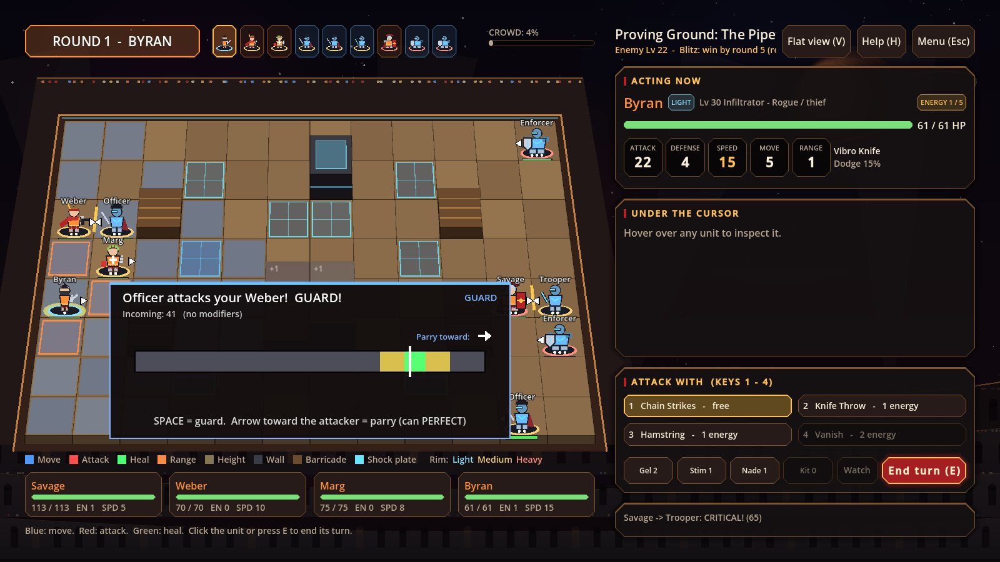
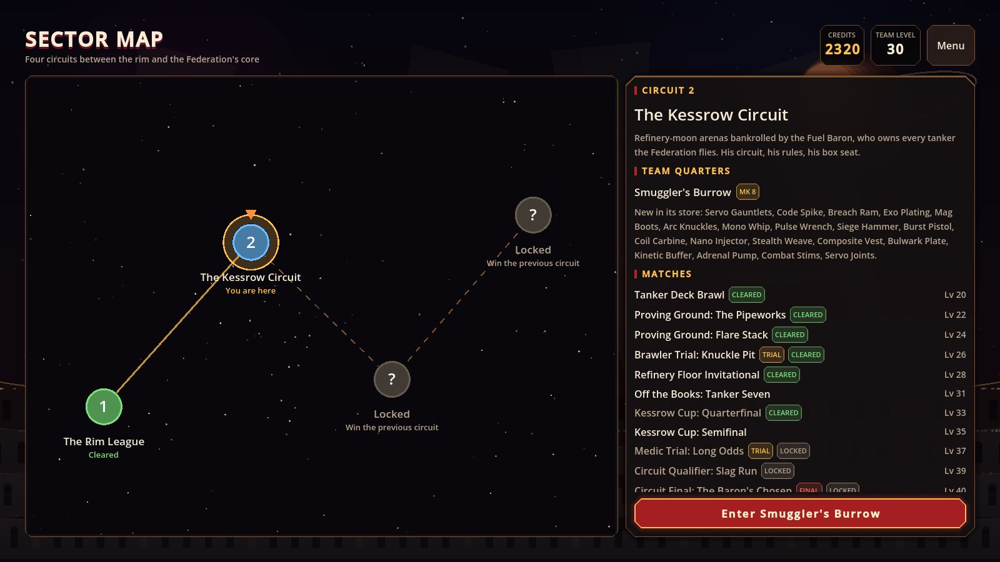
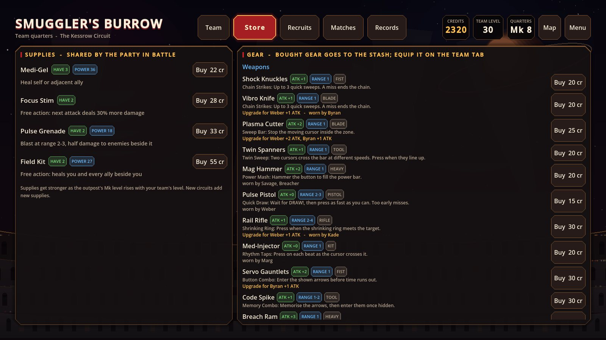
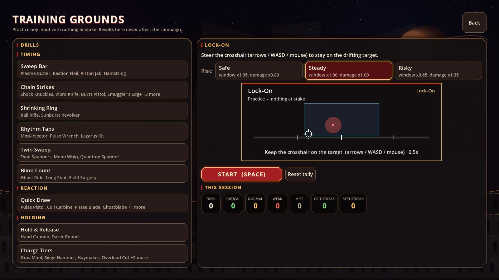

Telecrisis Revenge
An arena tactics RPG where every hit is timed. The Federation keeps its people quiet with gladiatorial Games. The children of the pilots it locked away enter them, win their way up four circuits, and get close enough to the leaders to bring them down.

The story
Bread and circuses
The Federation keeps its people quiet with the Games: arena leagues on every world, broadcast to all of them.
The pilots who exposed what the Federation really is were called liars, and locked in a prison beyond the edge of the charts.
Their children remember
Savage, Weber, Marg and Byran grew up on that lie. They know the truth, and they know nobody gets near the Federation's core leaders. Nobody except its champions.
Four circuits, four leaders. Win a circuit and the leader who sponsors it receives you in person.
Play to the crowd
In the arena they are entertainers. Outside it they are taking the Federation apart, one core at a time.
How a match plays
Turn-based on a grid, in speed order. Positioning sets up the hit; your timing decides how hard it lands.
- PLACEset your formation
- MOVEheight, flanks, cover
- STRIKEtime the input
- GUARDparry their blows
- WINXP, gear, the crowd
Timed strikes
Every weapon has its own input: sweep bars, chains, combos, lock-ons and more. Land a Critical for big damage; the timing is the same for every fighter, so skill matters, not stats.
Guard and parry
On the enemy's turn you guard with your own timing. A perfect parry toward the attacker blocks it and counters. Officers feint, so wait for the real swing.
Position matters
Side hits do +15%, back hits +30%. High ground helps. Fighters next to each other square up face to face, and walking away gives your opponent a parting strike.
Arena rules
Hold the zone, survive the rounds, take down the champion, win fast, or fight with no supplies. Shock plates, falling debris, oil fires, cover and overwatch change every map.
Beat the odds
Quick fighters can dodge a hit, but never a Critical. Land one on an enemy that was about to slip away and you get DODGE DENIED! as it's dragged back into the hit.
The crowd is on the underdog's side. Fall behind and their cheers top up your team; pull ahead and they pay you in credits instead of making the fight easier.

Read the board before you commit
Orange outlines show what your chosen attack can reach, from where you stand or from any tile you hover. Click an enemy to see the damage preview, then click again to strike; you can still back out at the risk choice.
Angled view shows the heights; press V for a flat, top-down board.

Guarding is a skill too
Every enemy strike runs its own meter. Guard to take less, parry toward the attacker to take nothing and hit back.

The road to the Games
Four circuits stand between the team and the Federation's leaders. Each is a ladder of proving-ground bouts, cup matches and a story match, with two class trials that unlock a mastery for every fighter of that class.
The circuit final is gated: clear the ladder first. The ladder alone leaves you a few levels short, so the circuit's Exhibition and the Open Arena are there to grind, and their wins can drop gear and arena-only rare finds.
Finish the story and every circuit stays open, along with the Open Arena.

| Circuit | What it is | Enemy levels |
|---|---|---|
| The Rim League Outpost: Drifter's Dock | Dust-bowl arenas on the Federation's edge, where nobody asks who is signing up. The Rim Governor sponsors the league and receives its champions in person. | 1–10 |
| The Kessrow Circuit Outpost: Smuggler's Burrow | Refinery-moon arenas bankrolled by the Fuel Baron, who owns every tanker the Federation flies. His circuit, his rules, his box seat. | 10–20 |
| The Halcyon Games Outpost: Breakers' Yard | Military games held in the shipyards to entertain the fleet. The Fleet Marshal awards the medals personally. | 20–30 |
| The Core Championship Outpost: Hollow Asteroid Camp | The Grand Coliseum at the heart of the Federation. The High Chancellor crowns the champions, and keeps the keys to the prison where the pilots are held. | 30–40 |
The team quarters
Between matches you run the team: hire recruits, spend training points, learn perks, and pick the party and the formation.
The store sells 121 pieces of gear across four Mk tiers that open circuit by circuit, plus 6 kinds of supplies. Mk gear arrives already upgraded, the store shows who each piece would improve, and spare gear sells back.
16 rare finds, each with a catch, come from story matches, class trials and side bouts.

24 timed inputs
Each weapon and technique uses one. Practise any of them, with nothing at stake, in the Training Grounds.
- Sweep BarStop the moving cursor inside the zone
- Chain StrikesUp to 3 quick sweeps
- Button ComboEnter the shown arrows before time runs out
- Memory ComboMemorise the arrows, then enter them once hidden
- Hold & ReleaseHold, then release inside the zone
- Charge TiersHold to charge through 3 levels
- Power MashHammer the button to fill the power bar
- Alternating MashAlternate Left / Right to fill the power bar
- Rhythm TapsPress on each beat as the cursor crosses it
- Shrinking RingPress when the shrinking ring meets the target
- Quick DrawWait for DRAW!, then press as fast as you can
- Lock-OnSteer the crosshair (arrows / WASD / mouse) to stay on the drifting target
- Twin SweepTwo cursors cross the bar at different speeds
- Blind CountThree beats tick, then go silent
- Spin CyclePress the arrows round in order (up, right, down, left) as fast as you can
- Pressure GaugeHold to push the needle up, let go to let it fall
- FeintFake tells flash first
- Push Your LuckEach press adds a random 10-30% power
- PendulumPress at the top of each swing to build momentum, then strike as it passes the bottom
- Lead the TargetThe shot takes a moment to land: fire before the target reaches the mark
- Dual WieldTwo bars, one per hand: Left stops the top one, Right the bottom
- Cook the FuseHold to cook; the ticks speed up
- Tug of WarMash to haul the rope in, but stop while BRACE flashes or you lose ground
- Path TraceSteer through the gates in order before time runs out
Training Grounds
Pick a drill, pick a risk (bigger window or bigger payoff), and keep a tally of your Criticals and best streak.

Your game, your way
Story / Standard / Hard
Enemy strength you can switch at any time. Standard is tuned so an average player loses now and then.
Relaxed timing
Bigger zones and more time on every input, for anyone who wants the tactics without the pressure.
Open Arena
Free-play bouts against opponents at your level. Pick the arena, the odds and the team size.
Classes
8 classes, each with a weight, a passive, a signature technique and a mastery. Meet them all →